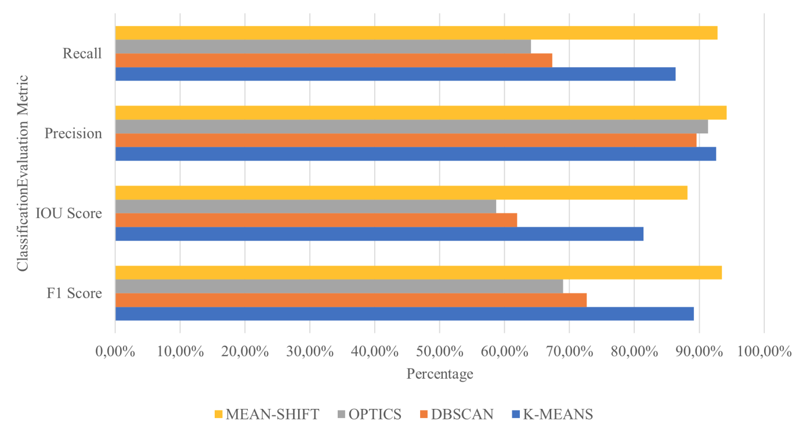

Summary Results
Objectives
- Investigate whether clustering methods produce more semantically meaningful clusters than k-means, through point feature clustering on point clouds with varying dimensionality.
- Determine the upper bound accuracy when using clusters to perform binary classification on point clouds.
- Simplify and accelerate point cloud cleaning.
Summary of Results
We explore the objectives through different classes of clustering algorithms and compare against k-means
Partitional+GMM Based
Algorithms Implemented:
GMM, K-medians and Fuzzy c-means clustering.Key Results:
GMM maintains a strong performance in the clustering and classification task. throughout all three datasets. GMM produces a small amount of clusters that can simplify and accelerate the cleaning task. The performance of all the algorithms is optimal when utilising the PointNet++ dataset. Encoding additional features into the dataset is valuable.Hierarchical Based
Algorithms Implemented:
Agglomerative, BIRCH, and CURE clustering.Key Results:
All algorithms match or exceed Kmeans in many clustering and classification metrics. CURE and Agglomerative show the most promising results. High time and space complexity. Algorithms perform well with low dimensionalities and down sampled data. This reduces the effects of increased complexity.Density Based
Algorithms Implemented:
DBSCAN, OPTICS, and Mean-Shift clustering.Key Results:
Mean-Shift accurately classifies point cloud into keep and discard and outperforms k-means on two datasets. Algorithms produce too many clusters, despite good classification results. DBSCAN and OPTICS perform suboptimally. Feature selection affects results. Best classification results achieved on raw dataset.

Conclusions
Clustering can classify CH point clouds into keep and discard clusters. Some methods are impractical for point cloud cleaning because they produce numerous clusters. Feature set dimensionality and selection affects clustering algorithms' performance. Cluster validity metrics are insufficient for representing the clusters' usefulness for this task.